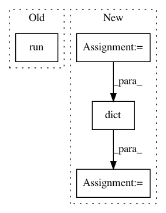

054095d922edda5134e520522bc82a1b95cc5bd4,onnx_tf/backend_rep.py,TensorflowRep,run,#TensorflowRep#Any#,52
Before Change
sess.run(tf.compat.v1.global_variables_initializer())
outputs = [self.tensor_dict[output] for output in self.outputs]
output_values = sess.run(outputs, feed_dict=feed_dict)
return namedtupledict("Outputs", self.outputs)(*output_values)
def export_graph(self, path):
Export backend representation to a Tensorflow proto file.
After Change
// single input
feed_dict = dict([(self.inputs[0], inputs)])
input_dict = dict(
[(x[0], tf.constant(x[1])) for x in feed_dict.items()])
output_values = self.tf_module(**input_dict)
output_values = [val.numpy() if isinstance(val, tf.Tensor) else val for val in output_values]
In pattern: SUPERPATTERN
Frequency: 3
Non-data size: 4
Instances
Project Name: onnx/onnx-tensorflow
Commit Name: 054095d922edda5134e520522bc82a1b95cc5bd4
Time: 2020-09-09
Author: smonov@gmail.com
File Name: onnx_tf/backend_rep.py
Class Name: TensorflowRep
Method Name: run
Project Name: kengz/SLM-Lab
Commit Name: 60d3325b8551cc6f7592e1266878818ad07d3b3a
Time: 2018-01-13
Author: kengzwl@gmail.com
File Name: slm_lab/experiment/control.py
Class Name: Trial
Method Name: run
Project Name: tensorflow/transform
Commit Name: 51a0c5fbe8e236cdb7e58afce66d7639d8fe9a45
Time: 2017-10-20
Author: tf-transform-dev@google.com
File Name: tensorflow_transform/saved/input_fn_maker_test.py
Class Name: InputFnMakerTest
Method Name: _test_build_parsing_transforming_serving_input_fn